目標・人生に合わせて選べるキャリア
薬剤師としてキャリアアップを目指すのは同じ。けれど、夢や目標、ライフスタイルは人それぞれ。
全国に運営会社を持つなの花薬局なら、様々なキャリプランに応えるフィールドが用意されています。
ここから本文です。
薬剤師としてキャリアアップを目指すのは同じ。けれど、夢や目標、ライフスタイルは人それぞれ。
全国に運営会社を持つなの花薬局なら、様々なキャリプランに応えるフィールドが用意されています。
PLAN 1
こんなあなたにおすすめ
勤務
エリア
全国430店舗以上のうち、通勤時間90分以内で通える範囲での店舗配属
CAREER PASS
なの花薬局 釧路幸町店 薬局長 金原 麻登佳
PLAN 2
こんなあなたにおすすめ
勤務
エリア
北海道・東北・関東甲信越・東海北陸・近畿中四国・九州の全6エリアから希望を指定。専用手当・借上社宅・引越費用負担等サポートあり！

CAREER PASS
なの花薬局 エスパル仙台店 薬局長 猪股 永法
PLAN 3
こんなあなたにおすすめ
勤務
エリア
当社が指定した全国の店舗への配属 専用手当・借上社宅・引越費用負担、奨学金返済サポート等手厚いサポートあり！

CAREER PASS
なの花薬局 一番町店 野口 慎也
入社時
希望エリアを選択
スキーを楽しみたいので 雪の降るまちで働きたい
最先端の情報があふれる 都心で働きたい
就職を機に地元へ戻りたい
入社後
ライフイベントにより
エリア変更可能
結婚を機に他のエリアへ

配偶者の転勤を機に
他のエリアへ
親の介護を機に
地元へ戻りたい
私たちは、全国の多様な地域性に対応する「地域薬局」です。実践的能力、コミュニケーション能力、医療マインドを高めながら、一人ひとりが必要とする知識や技能を患者さまや多職種へ還元し、課題を主体的に改善していく力を育成します。
1年目から4年目は「新人研修」「Pharmacist Basic研修」「OJT・個人面談」「ポートフォリオ」など継続的な研修で社会人・医療人として基礎スキルを身につけながら、さらに専門性を高める選択型薬剤師教育、マネジメント教育まで、興味のある分野を伸ばせる教育研修制度が整っています。

参加者全員へタブレットを貸与し、全国に広がる同期と一緒にオンラインで実施。医療人としての心得やコミュニケーションスキルなどを身につけ、社会人·医療人としての第一歩を踏み出す準備を整えます。
オンライン研修期間を終えたら、より実践的な内容を配属地域ごとに対面で学んでいきます。同期と親睦を深められるようなサポートも行っています。
社会人・医療人としての第一歩を踏み出す
1〜5日目
6・7日目
8〜12日目

1年目7月から4年目までは新人研修と同じく、オンラインで研修を行います。
研修を終えて、実務ですぐに実践できる内容が充実しています。

OJT
OJTとはOn-the-Job Trainingの略。日々の業務を通じ、新人の理解度に合わせて成長をサポートします。
OJTトレーナーが、マンツーマンで新人を指導。
困った時にすぐに質問や相談ができる環境も安心して働くことができるポイントです。
2年目以降は自身がトレーナーとなり後輩を指導。教える立場になることが、さらなる成長につながります。
個人面談
OJTの進捗確認に加え、職場の人間関係や業務などに関してのフォローと精神面も含めたサポートを目的として、各エリアの教育担当者が面談をしています。

日々の臨床から気づきと学びを深め、実践に繋げることを目的に4年目までの薬剤師に導入している教育プログラムです。自身が対応した事例について、トレーナーとのディスカッションを通して振り返りと深掘りをすることで、問題解決力の向上と気づきをうながします。また、規定された特定領域について学びを深め、年1回その学習成果を提出してもらい、優秀な事例については社内表彰をしています。

「まちのあかり」として地域医療を支える薬剤師を育成するための教育制度です。
【臨床】【研修】【研究】【資格】の4種類の実績を積み重ねて、ステップアップしていける制度となっており、Step1〜5の5段階に分類され、多くの薬剤師がStep3以上を目指しています。
薬剤師としての第一歩を踏み出すステージ
基本的な専門知識を持ち、臨床で実践できる薬剤師
「コミュニティファーマシスト」の証として 、Step3〜5の薬剤師はなの花薬局キャラクター「Na-No」の ピンバッジを身に着けています。
日々新しい情報を取り入れ、臨床だけでなく地域でも実践できる薬剤師

得意分野を持ち、社内外でその力を発揮できるエキスパート

専門領域における担い手であり、社内外でその力を発揮できるスペシャリストとジェネラリスト

「管理薬剤師研修」「薬局長研修」「ブロック長研修」その他「OJTトレーナー研修」「ポートフォリオトレーナー研修」「社内e-ラーニング」など、マネジメントのスキルを磨き、段階を踏んでキャリアアップが実現できる教育研修制度を設けています。

広域勤務（全国対象）を5年間勤務する場合、奨学金サポート制度として毎月10,000円の手当支給があります。
関東・近畿の対象地域（当社指定エリア）で一人暮らしをする薬剤師を対象に、入社後5年間、住宅補助が支給されます。
出産後原則1年まで育児休暇を取ることができます。休暇中にも会社から最新情報を自宅に郵送するなど、復職しやすいサポート体制も完備。
妊娠中の通院休暇・通勤緩和措置(1時間の勤務短縮又は時差出勤)や育児短時間勤務制度を活用する社員もいます。当社は、産休・育休の取得率だけでなく復帰率も大切にし、安心して長く働ける環境を整えています。
有名ホテルの特別価格優待や、全国のテーマパークや映画館のチケット割引だけでなく、個人のスタイルに合わせたフィットネスクラブ利用サービス、さらには育児補助金等の子育て支援などを、与えられたポイントの範囲内で自由に選んで利用できるサービスです。
新入社員アンケートで約8割が、入社の理由を「薬局の雰囲気の良さ」と回答。薬剤師の平均年齢が37歳と経験豊富な中堅・ベテラン社員が多い中で、先輩の後押しを受けながら活躍できるあたたかい環境があります。

スポーツをはじめ様々な活動に対し、自主的に立ち上げたサークルを公認サークルとして認定、奨励金を支給する制度です。全国のグループ社員間のコミュニケーション向上とワークライフバランスの観点から推進しています。

オンライン研修で、全国に点在する仲間たちとグループワークをしたり、交流を深めることができます。また、オンライン研修期間を終えたら、より実践的な内容を配属地域ごとに対面研修で学んでいきます。
切磋琢磨しあうライバル関係になったり、先輩や上司には打ち明けられない仕事の悩みや愚痴など本音が話せたりするのは、同期ならではの関係性。
新人研修を経験してそれぞれの店舗に配属された後も強くて深い絆で結ばれています。

地域密着型店舗割合
店舗形態：マンツーマン／医療モール（2023年9月現在）


地域医療に不可欠となる医師との連携を必要とするほか、地域の皆様の健康に関する情報拠点としての機能を担います。患者さま一人ひとりの体調の変化や希望に沿って寄り添うことで、信頼を得ることにやりがいを感じられます。
直近の新卒離職率
2021年〜2023年
新入社員離職率

OJT、上司との個人面談など細やかなフォローで業務時の悩み、相談に応えます。また新人研修で仲を深めた同期とのコミュニケーションも日々のリフレッシュとなるようです。
調剤チェーン企業調剤報酬額ランキング
「ドラッグマガジン2023年医薬品産業ランキング」より
取り扱い処方箋枚数は年間908万枚（2023年3月期実績）、連結売上高は1,095億円（2023年3月期実績）、医薬品発注取扱高は5,262億円（2023年3月期実績）と右肩上がりを記録しています。

薬剤師の平均年齢
2023年９月現在
なの花薬局自体も1999年設立、20年弱のフレッシュな会社です。30歳にして薬局長など、若い社員の活躍が目立ちます。若い会社だからこそトップダウンではなく、新入社員の意見も言いやすい環境であるといえます。
産休・育休取得後の復職率
2020年10月～2023年9月
実際に、2度の産休育休を取得しながら認定薬剤師を取得し時短で働く薬局長の女性社員も在籍。潜在薬剤師となってしまわないよう、休暇取得だけでなく復帰も全力でサポートします。
勤務地を教えてください。
北海道（道央、道南、道北・道東）、東北、関東、甲信越、北陸、東海、近畿、中国、四国、九州 ※自宅通勤勤務（原則、自宅から通える範囲での勤務）の他、広域勤務（エリア対象、全国対象）が選べます。 「自宅通勤勤務」「広域勤務（エリア対象・全国対象）」の詳細については、採用情報をご覧ください。
転勤はありますか。
自宅通勤勤務（原則、自宅から通える範囲での勤務を希望される方）の場合は、エリアを越えての強制的な転勤はありません。ただし、結婚のタイミングや、他の地域でも活躍したいなど、本人が希望した場合はエリアを変更して勤務することができます。
配属店舗はどのように決まりますか。
「自宅通勤勤務」の場合は原則、自宅（実家・一人暮らし宅など）から通える範囲の当社指定店舗に配属されます。
「広域勤務（エリア対象）」の場合は、希望エリア内の当社指定店舗に配属されます。
「広域勤務（全国対象）」の場合は、当社指定のエリア内の当社指定店舗に配属されます。
「自宅通勤勤務」「広域勤務（エリア対象・全国対象）」ともに、特に最初の配属店舗については、しっかりとしたOJT研修が受けられ、成長できる環境があるかどうかを考慮しています。
店舗異動はありますか。
さまざまな科目を勉強できるように、定期的ではなく経験や状況に応じて、店舗異動があります。「自宅通勤勤務」の場合は、店舗異動についても原則、自宅（実家・一人暮らし宅など）から通える範囲で行います。
社宅制度はありますか。
借上社宅制度があり、「広域勤務（エリア対象・全国対象）」希望者のみ利用することができます。 ※借上社宅制度を利用した場合、家賃・駐車場代の個人負担は実質ありません。
奨学金の返済支援制度はありますか？
広域勤務（全国対象）を4年間勤務する場合、奨学金サポート制度として毎月10,000円の手当支給があります。
どのような教育研修制度がありますか。
新人研修、OJT、ポートフォリオ、フォローアップ研修(1～4年目)、e-ラーニング(社内、社外)、管理薬剤師研修、薬局長研修、ブロック長研修、評価者研修、なの花接遇研修、CP Step制度(薬剤師ステップアップ制度)、CPサポート制度(資格取得支援)、なの花フォーラム(社内学会)、外部施設・組織連携型研修(病院研修、北海道心不全医療連携アカデミー、京大病院オンライン緩和ケアセミナーなど）等、キャリアや目的に応じてさまざまな研修を実施し、社員の成長をサポートしています。
産休・育休は取れますか。
取れます。実際に希望した社員は100％取得しています。更に、妊娠中の通院休暇・通勤緩和措置(1時間の勤務短縮又は時差出勤)や育児短時間勤務制度を活用する社員もいます。当社は、産休・育休の取得率だけでなく、復帰率も大切にし、安心して長く働いていただく環境を整えています。
会社説明会や薬局見学会は実施していますか。
全国各地で開催しています。最新情報や詳細は、LINEマイページまたは各種就職サイトよりご確認ください。
どんな福利厚生がありますか。
ホテルや映画館の各種割引や育児補助金などの子育て支援が受けられる、選択型福利厚生サービスが利用できます。また、長く働くことができるよう、退職金制度、借上社宅制度、従業員持株会、研修保養施設、永年勤続表彰などもご用意しております。
出産や育児に対するサポート制度はありますか。
産前産後休暇や育児休暇はもちろんのこと、小学校1年を終了するまで育児短時間勤務制度を利用することができ、安心して仕事と育児を両立することができます。